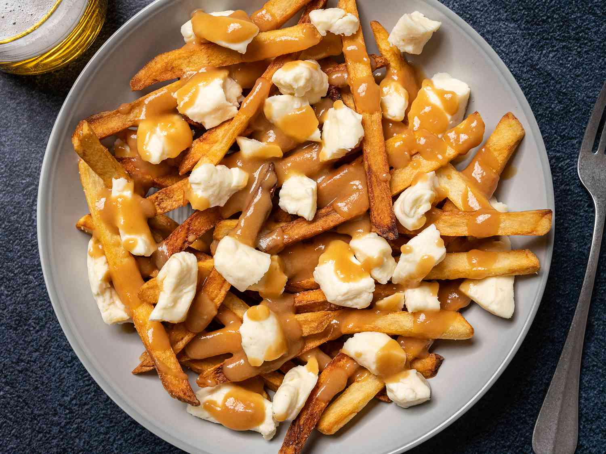

Home
Poutine Recipe

Description
Poutine is a wonderful and delicious concoction of fries, gravy and cheese curds and is one of the mos quintessential Canadian dishes.
Ingredients
- Cornstarch
- Water
- Unsalted Butter
- Unbleached All-Purpose Flour
- Beef Broth
- Chicken Broth
- Pepper
Instructions
- In a small bowl, dissolve the cornstarch in the water and set aside.
- Melt butter in a large saucepan. Add flour and cook, stirring regularly for 5 minutes.
- Add broth and bring to a boil, stirring with a whisk. Stir in half the cornstarch mixture and simmer for 1 minute. Season with pepper.
- Remove the potatoes from water and place onto a sheet of paper towel. Blot to remove excess moisture.
- Add fries to the 300F oil and cook for 5-8 minutes, just until potatoes are starting to cook but are not yet browned. Remove potatoes from oil and scatter on a wire rack.
- increase oil temperature to 375F. Once oil is heated, return the potatoes to the fryer and cook until potatoes are golden brown.
- Add fries to a large, clean bowl. Season lightly with salt while still warm. Add gravy and toss the fries in the gravy. Add cheese curds and toss with hot fries and gravy. Serve with pepper.